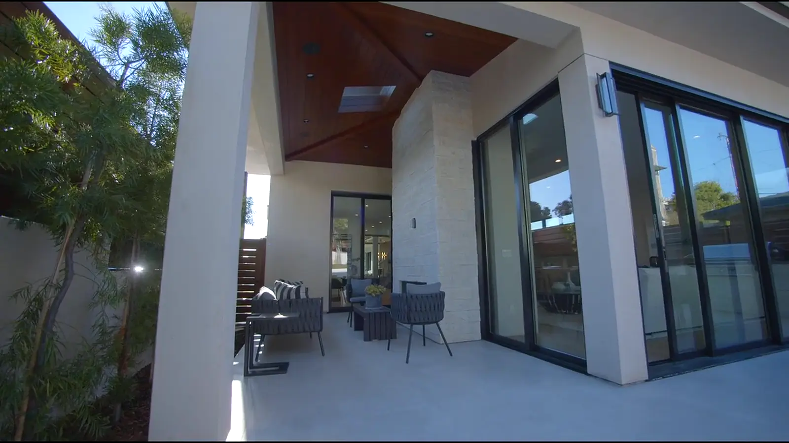
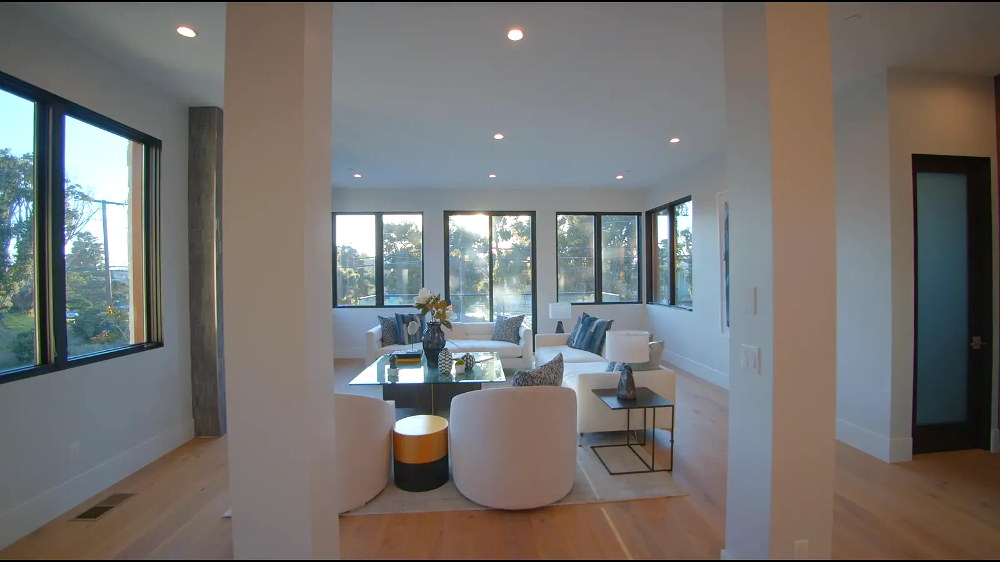
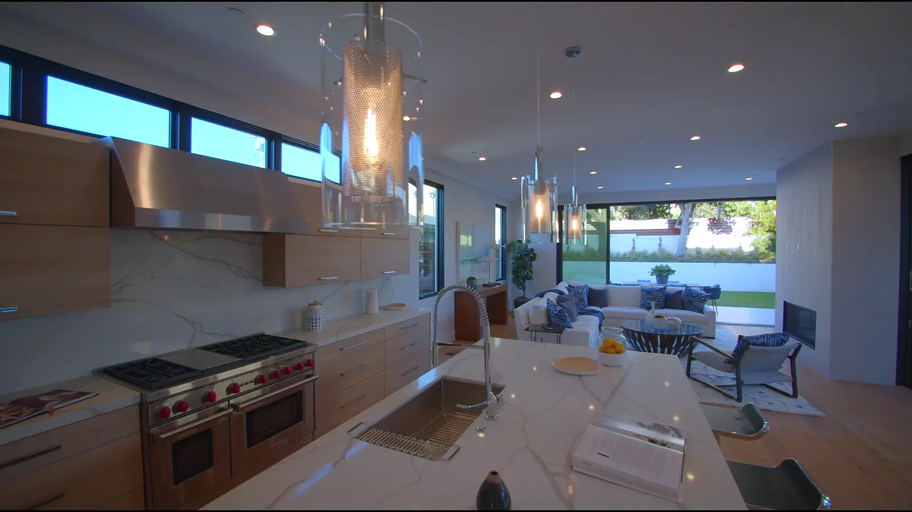
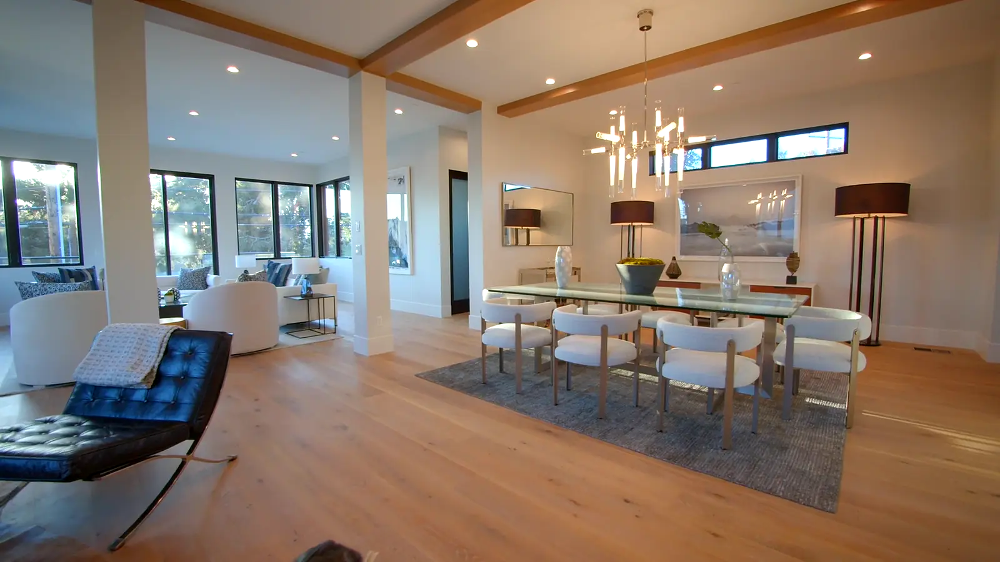
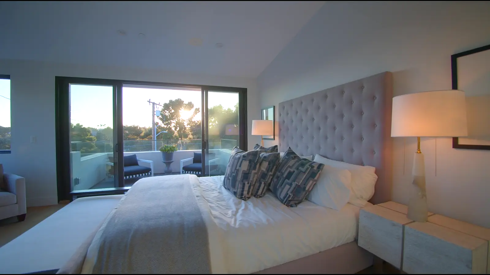
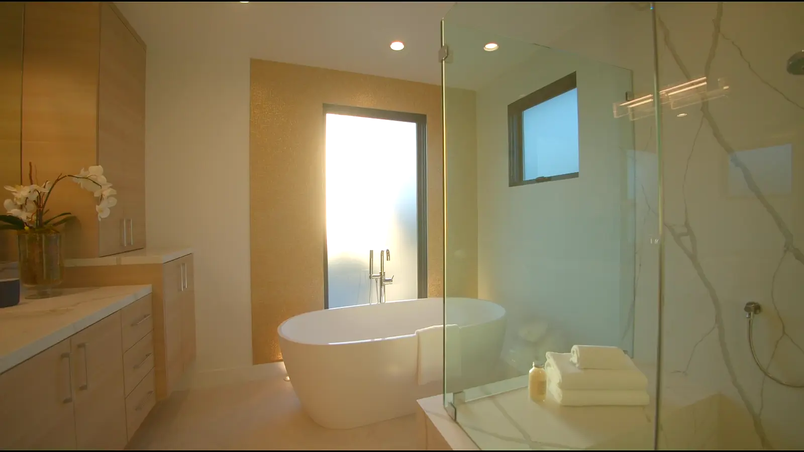
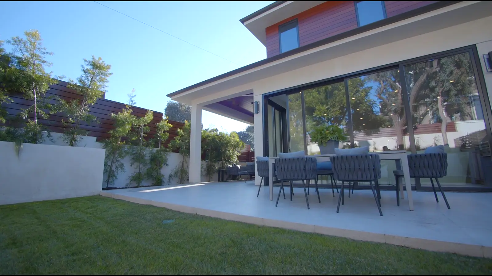

Architecture
Site appraisal, concept, planning and a fully coordinated drawing set.
- Feasibility & planning
- 3D design reviews
- Interior architecture
01 Concept · Residential design & build
Every Northbeam house starts as a drawing we are prepared to build exactly. Scroll to watch one leave the page.
02 Structure · Set out on site
The drawing is set out on the ground to the millimetre, then frame, roof and glazing follow the same lines.
03 Realised · Hillcrest Residence
Cedar, stone and render over a frame built to outlast its first owners. 412 m², completed in fourteen months.
— The threshold
04 The living volume
A clear-span oak floor from the entry to the garden wall, with exposed beams carrying the floor above.
05 The kitchen
A five-metre island in honed quartzite, clerestory glazing above the cabinetry, appliances built in flush.
06 Dining
Hand-blown pendants over a glass table, placed where the evening sun crosses the room.
07 The principal suite
Acoustic separation tested on site, with a private terrace facing west.
08 The bath
Book-matched slabs, a freestanding tub and a frameless wet room, tanked and tested before a tile was laid.
09 Handed over
The approach
We design the walk from the gate to the door before we draw a wall. Sightlines, shade, the sound of the latch: these are set first, and the structure is engineered around them.
One team carries the house from first sketch to final key, so the drawing and the building never drift apart.
Talk to an architect →
Hillcrest Residence · Entry terraceServices
Site appraisal, concept, planning and a fully coordinated drawing set.
Our own site teams build what our architects draw, under one contract.
A two-year defects period and a ten-year structural warranty on every house.
Hillcrest Residence






Enquire
Tell us about the site and the house you have in mind. An architect replies within two working days.